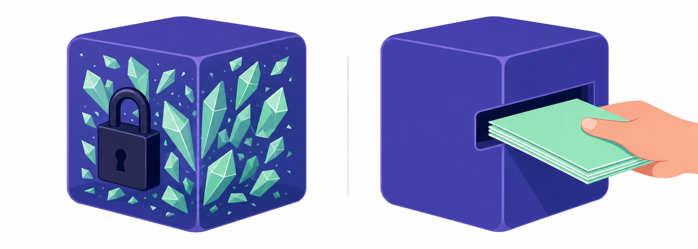
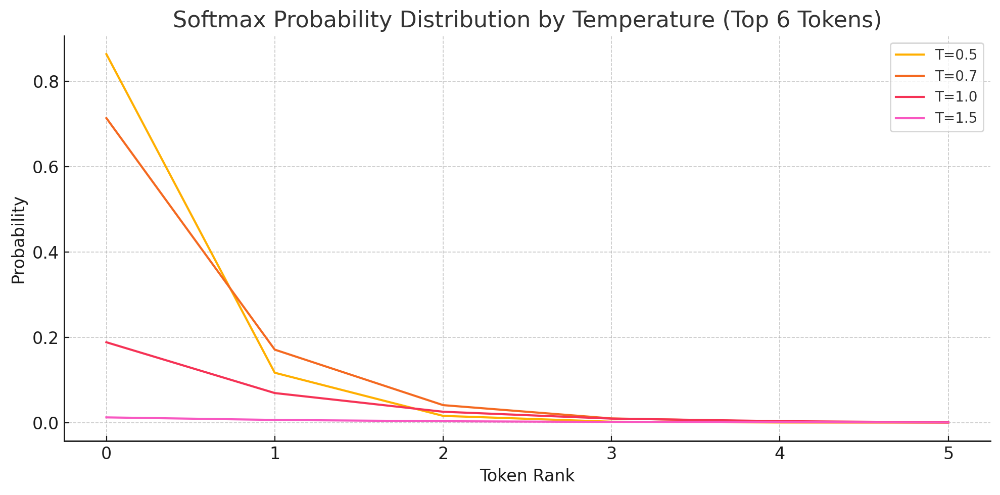
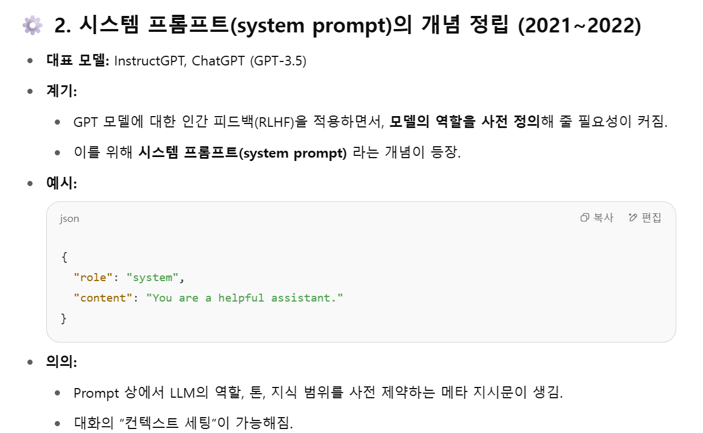
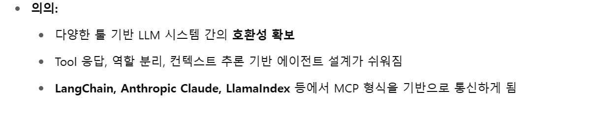

모델이 모르는 것을
어떻게 알게 하는가
가중치를 다시 학습시킨다 — 돈도 시간도 데이터도 없다.
입력을 고친다. 프롬프트 · RAG · 도구 호출 · MCP.
마지막 슬라이드가 이 질문에 답하지 못하면 오늘 수업이 빈 것이다.
지식이 오는 곳은 둘뿐이다

프리트레이닝·SFT·RLHF 를 거치며 들어갔다. 고정이고, 바꾸려면 다시 학습해야 한다.
지금 이 요청에만 유효하다. 내가 통제할 수 있는 유일한 지식이다.
오늘 하는 모든 일은 두 번째를 늘려 첫 번째의 약점을 덮는 것이다.

“I know”
가 서는 자리
오늘 하는 일은 저 겹치는 영역을 억지로 넓히는 것이다.
모델의 시계는 멈춰 있다
Knowledge Cutoff도시 쪽은 특히 심하다 — 법령이 바뀌고 계획이 갱신되는데 모델은 학습 시점에 멈춰 있다.
원인의 하나는
아주 기계적이다
확률표를 뾰족하게 할지 평평하게 할지
누적 확률 몇 %까지를 후보로 남길지
그리고 남은 후보들 중에서 랜덤으로 하나를 뽑는다.
같은 질문을 다섯 번씩
Q. 한국건설기술연구원에 대해서 한 문장으로 설명해줘연구에 쓰려면 오른쪽이어야 한다. 단, 오른쪽이 정답이라는 뜻은 아니다 — 재현될 뿐이다.
온도를 올린다 = 순위를 무너뜨린다
실제 로짓으로 계산한 상위 6 토큰
1 등 0.86 — 사실상 혼자 뽑힌다
1 등 0.71 — 가끔 2 등이 들어온다
1 등 0.19 — 후보가 확 늘어난다
거의 평평 — 순위가 의미를 잃는다
같은 K 인데 반대 방향으로 틀린다
Top-K 를 4 로 고정했을 때
색깔이 다 0.02~0.03. Top-4 는 똑같이 그럴듯한 blue·violet·olive 를 잘라 버린다.
on 0.45 / off 0.44 로 사실상 둘뿐인데 0.01 짜리까지 후보로 넣는다.
개수를 고정하지 말고 누적 확률 90 % 가 찰 때까지만 남긴다 — 분포가 알아서 개수를 정한다.
진짜 입력은
채팅창이 아니다
바꾼 것은 system 한 줄뿐
user 는 셋 다 “안녕 넌 누구니?”반말로 대답한다.”
실습에서 만질 곳이 정확히 이 한 줄이다 — 연구에서는 이게 통제변수가 된다.

처음부터
있던 게 아니다
RLHF 를 적용하다 보니 모델의 역할을 미리 정해 줄 필요가 생겼고, 그래서 system 이라는 role 이 만들어졌다.
프롬프트가 점점 프로토콜이 되어 가는 과정이다.
시스템 프롬프트
RLHF 가 “이건 반드시 따르라” 고 학습시킨 자리여기서 한 발 더 — 역할 말고 정보를 넣으면 어떻게 되나?
같은 질문, 다른 답
차이는 시스템 프롬프트에 자료를 실었느냐뿐모델이 똑똑해진 게 아니다. 답할 재료를 줬을 뿐이다.
RAG — Retrieval-Augmented Generation
앞 실험은 자료를 손으로 넣었으니 아직 “검색” 부분이 빠져 있다.

지식 확장과
도구 사용
이 왕복이 생기는 순간 챗봇이 아니라 에이전트다.
여러분이 지금 쓰는 코딩 어시스턴트가 정확히 이 구조다.
전부 넣을 수는
없다
577 페이지짜리 도시기본계획을 통째로 넣고 분석해 달라고 할 수 없다.
어떻게 고르나 — 다음 시간.

프레임워크가
모델 안으로
LangChain 이 밖에서 하던 도구 연결을 OpenAI 가 모델에 내재화했다.
tool_call 은 모델이 지어낸 문장이 아니라구조화된 토큰으로 처리된다.
LLM 의 입출력이 자연어에서 구조체로 넘어간 지점이다.

도구 하나에
세 벌을 만들 순 없다
OpenAI · Claude · Gemini 가 각자 다른 형식으로 도구를 불렀다. 다 JSON 인데 필드도 응답도 다르다.
user assistant system 에tool function 이 붙고, tool 응답은 tool_response 로 따로 구분된다.표준이 생기면 붙일 수 있다
MCP 의 의의와 기술적 특징
호출 형식을 하나로 통일했다. 이미 있던 표준을 가져다 쓴 것이다.
스트리밍이 되는 두 가지 통신 방식. 답이 나오는 대로 흘려보낸다.
stdio 로 설치하면 내 PC 안에서 돈다 — 사내 데이터를 안 내보내고 도구를 붙일 수 있다.
사람이 SQL 을 쓰지 않는다
Data Hub · 온톨로지 레이어 사례“서울특별시 강남구 역삼동에 2025년도에 창업한 사업자 홍두선 대표님이 운영하는 사업자 목록과 주소 좀 구해 줄래?”
“2025년에 강남구 대치동에서 창업한 사업자를 찾아주고 개업시기, 사업장명, 주소, 국세청 업종분류를 알려줘.”
도시 데이터에 LLM 을 붙이는 일의 8 할은 모델이 아니라 데이터 쪽 구조를 정리하는 일이다.
프롬프트가 프로토콜이 되기까지
2021 → 2025사람이 말로 쓰던 것이 기계가 파싱하는 구조체로 계속 굳어져 왔다.
채팅창 말고 API 로
채팅창에서는 못 하는 일 — 연구에서 통제 변수가 된다.
낮게 고정해야 같은 입력에 비슷한 출력이 나온다.
계획서 170 개, 민원 수천 건 — 손으로는 못 한다.
토큰이 곧 돈이다 — 한글이 왜 비싼지 여기서 체감한다.
만 원어치는 써 봐야 감이 온다 — 자꾸 시도해 보는 것이 실력이 된다.
하나만 골라 이야기해 보자
내 연구에 쓴다면 temperature 를 얼마로 두겠는가. 그 이유는?
자료를 실어 줬는데도 모델이 그 자료와 다른 말을 하면, 어떻게 알아채겠는가?
내가 다루는 도시 데이터에 MCP 를 붙인다면 어떤 도구를 먼저 만들겠는가?